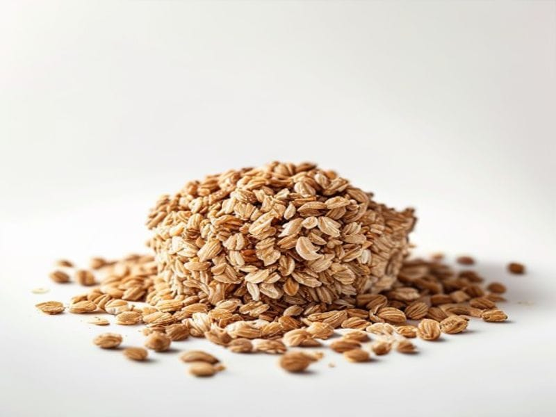

Zboża i kasze
Granola
Granola: 10 g białka, 471 kcal, 64 g węglowodanów i 20 g tłuszczu na 100 g. Kategoria: Zboża i kasze.
Kalorie471 kcalna 100 g
Białko / proteiny10 g
Węglowodany64 g
Tłuszcz20 g
Cena (szac.)~1,25 złza 100 g
Ceny zaktualizowano: maj 2026 (szacunek — ceny w popularnych supermarketach)
Porcja: porcja (60g)
| Kalorie | 283 kcal |
|---|---|
| Białko | 6 g |
| Węglowodany | 38.4 g |
| Tłuszcz | 12 g |
| Cena (szac.) | ~0,75 zł |
Szczegółowe składniki odżywcze na 100 g
| Wartość energetyczna (kalorie) | 471 kcal |
|---|---|
| Białko (proteiny) | 10 g |
| Węglowodany | 64 g |
| Tłuszcz | 20 g |
| Tłuszcze nasycone | 4 g |
| Tłuszcze nienasycone | 16 g |
| Witaminy i minerały | Magnez, Tiamina (B1), Żelazo |
| Współczynnik kcal / 1 g białka | 47.1 |
| Cena produktu (szac. za 100 g) | ~1,25 zł |
| Cena za 100 g białka (szac.) | ~12,50 zł |